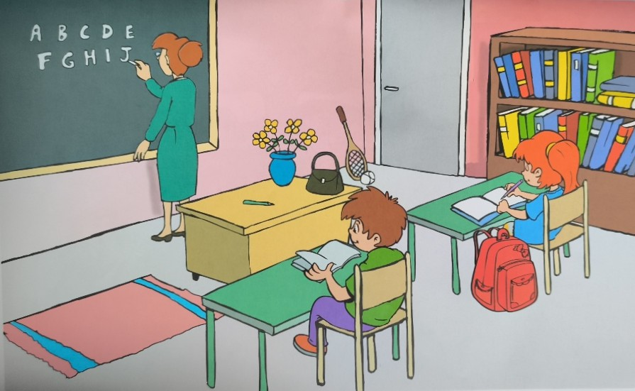

Práctica de speaking con la escena de clase (Cambridge style).
Scene Card

Pulsa para ampliar
Mira bien la imagen. Puedes ampliarla y hacer zoom para responder mejor.
Cómo usar: Pulsa Escuchar para oír la pregunta.
Escribe tu respuesta o usa el micrófono.
Luego pulsa Evaluar con IA para una corrección básica, o Ver respuestas para ver ejemplos.
Pregunta 1/30
Present Continuous
What is the teacher doing?
Escribe tu respuesta en inglés:
Posibles respuestas correctas
Estas son respuestas modelo. Tu hijo puede decir otras similares que también sean correctas.